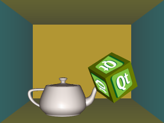

Files:

The Cube House example demonstrates the use of the accelerometer to drive a camera to create a pseudo-3D effect. It also demonstrates the use of a filter to smooth out the accelerometer values.
The accelerometer is created and the filter is added.
sensor = new QAccelerometer(this);
connect(sensor, SIGNAL(readingChanged()), this, SLOT(accelerometerTimeout()));
sensor->addFilter(new smoothedaccelerometerfilter(this));
sensor->start();
When new values are available, the view is recalculated.
void View::accelerometerTimeout()
{
QVector3D g = gravity();
mainCamera->setMotionAdjustment(g);
roomCamera->setMotionAdjustment(g);
update();
}
#define ACCEL_TO_G(v) (v / 9.80665)
QVector3D View::gravity() const
{
qreal x = ACCEL_TO_G(sensor->reading()->x()) * sensitivity;
qreal y = ACCEL_TO_G(sensor->reading()->y()) * sensitivity;
qreal z = ACCEL_TO_G(sensor->reading()->z());
return QVector3D(x, y, z);
}
The filter is defined like this.
class smoothedaccelerometerfilter : public QObject, public QAccelerometerFilter
{
qreal prevX;
qreal prevY;
qreal prevZ;
bool havePrev;
public:
smoothedaccelerometerfilter(QObject *parent = 0)
: QObject(parent)
, QAccelerometerFilter()
, prevX(0)
, prevY(0)
, prevZ(0)
, havePrev(false)
{
}
bool filter(QAccelerometerReading *reading)
{
// Smooth out the reported values. Large changes are applied as-is,
// and small jitters smooth to the rest position.
if (havePrev) {
qreal xdiff = reading->x() - prevX;
qreal ydiff = reading->y() - prevY;
qreal zdiff = reading->z() - prevZ;
#define threshold 0.196133f
if (qAbs(xdiff) < threshold && qAbs(ydiff) < threshold && qAbs(zdiff) < threshold) {
reading->setX(prevX + xdiff * 0.1f);
reading->setY(prevY + ydiff * 0.1f);
reading->setZ(prevZ + zdiff * 0.1f);
}
}
prevX = reading->x();
prevY = reading->y();
prevZ = reading->z();
havePrev = true;
return true;
}
};